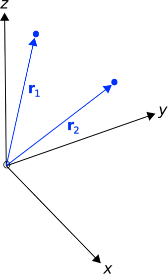
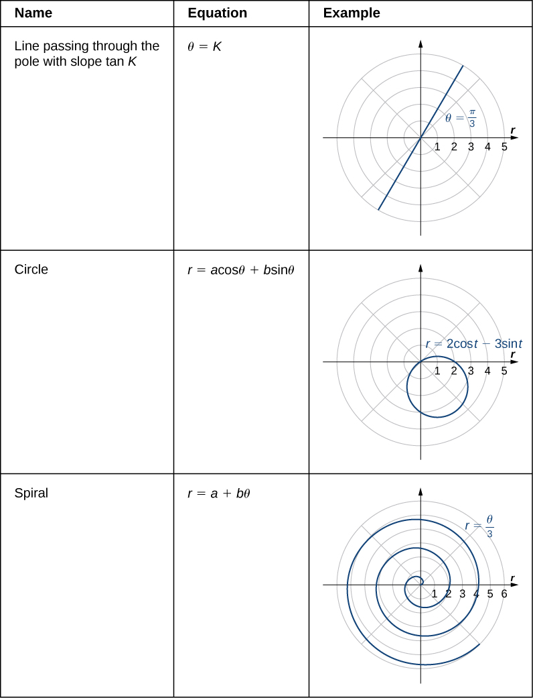
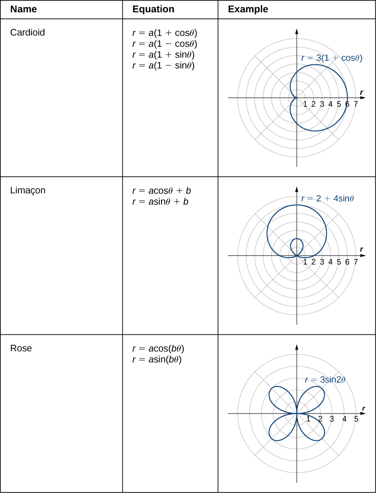
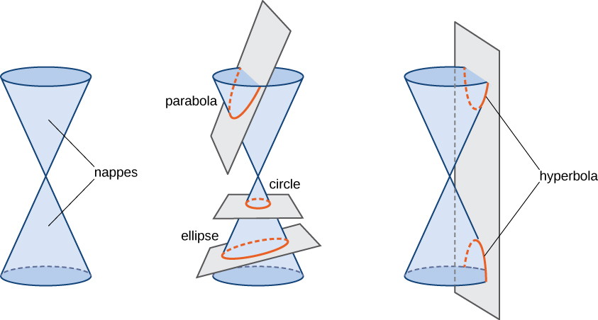
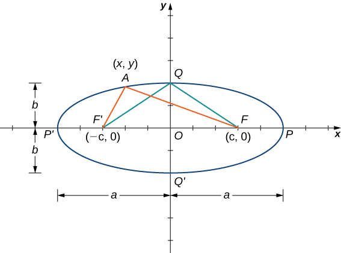

Any real-valued vector A⃗, has a magnitude A and direction  such that
A⃗ = AÂ
Many vectors can be represented using different coordinate systems. In this note, we will cover(broadly) some of the common coordinate systems and how we can work with them.
The rectangular coordinate system (or Cartesian system) provides a means of mapping points to ordered pairs and ordered pairs to points. This is called a one-to-one mapping from points in the plane to ordered pairs. The polar coordinate system provides an alternative method of mapping points to ordered pairs. The fundamentals of vector arithmetic can be easily grasped using the Cartesian system.
It is usually convenient to describe a position in space as a vector for which the magnitude is the distance from the origin of the coordinate system and for which the direction is measured from the origin toward the position of interest as show in the figure below

Position-free vectors, however, are not defined with respect to a particular point in space. For example. particles 2 miles apart may both be traveling at 13 m/s in the same direction. In this case, the velocity of each particle can be described using the same vector, even though the particles are located at different points in space.
Note
Position-free vectors are equal only if they have the same magnitudes and directions. Position-fixed vectors, on the other hand, must also be referenced to the same position (e.g., the origin) to be equal.
A basis vector is a position-free unit vector that is perpendicular to all other basis vectors for that coordinate system. Every coordinate system is defined in terms of three basis vectors which describe all possible ways to traverse three-dimensional space. The basis vectors of the Cartesian space are î, ĵ, and k̂ or alternatively presented as x̂, ŷ, and ẑ.
For operations on vectors in the Cartesian system, you can look into the previous note posted.
The point P has Cartesian coordinates (x, y). The line segment connecting the origin to the point P measures the distance from the origin to P and has length r. The angle between the positive x-axis and the line segment has measure θ. This observation suggests a natural correspondence between the coordinate pair (x, y) and the values r and θ. This correspondence is the basis of the polar coordinate system. Note that every point in the Cartesian plane has two values (hence the term ordered pair) associated with it. In the polar coordinate system, each point also has two values associated with it: r and θ.
Using right-triangle trigonometry, the following equations are true for the point P:
$$\cos \theta =\dfrac{x}{r}\text{ so }x=r\cos \theta$$
$$\sin \theta =\dfrac{y}{r}\text{ so }y=r\sin \theta$$
Also, it is known that r2 = x2 + y2 and $\tan\theta=\dfrac{y}{x}$ Each point (x, y) in the Cartesian coordinate system can therefore be represented as an ordered pair (r, θ) in the polar coordinate system. The first coordinate is called the radial coordinate and the second coordinate is called the angular coordinate. Every point in the plane can be represented in this form.
In the rectangular coordinate system, we can graph a function y = f(x) and create a curve in the Cartesian plane. In a similar fashion, we can graph a curve that is generated by a function r = f(θ). Here are some of the common polar curves and their equations.
 
For any curve on the Polar system described by r = f(θ), we can convert these to rectangular systems since we know that x = rcos θ and y = rsin θ.
x = f(θ)cos θ and y = f(θ)sin θ
We can use the above fact to parametrize our functions for x and y.
The primary reason I wanted to bring up Polar coordinates is to discuss the idea of conic sections using polar coordinates. Ellipses are types of conic sections. Conic sections have been studied since the time of the ancient Greeks, and were considered to be an important mathematical concept. As early as 320 BCE, such Greek mathematicians as Menaechmus, Appollonius, and Archimedes were fascinated by these curves. Appollonius wrote an entire eight-volume treatise on conic sections in which he was, for example, able to derive a specific method for identifying a conic section through the use of geometry. Since then, important applications of conic sections have arisen (for example, in astronomy), and the properties of conic sections are used in radio telescopes, satellite dish receivers, and even architecture.
Conic sections get their name because they can be generated by intersecting a plane with a cone. A cone has two identically shaped parts called nappes. One nappe is what most people mean by “cone,” having the shape of a party hat. A right circular cone can be generated by revolving a line passing through the origin around the y-axis as shown in the figure below.

Let’s focus on ellipses - for now.

In the figure above, the foci are labeled as F and F’. Both are the same fixed distance from the origin, and this distance is represented by the variable c. Therefore the coordinates of F are (c,0) and the coordinates of F’ are (-c,0).
The points P and P’ are located at the ends of the major axis of the ellipse, and have coordinates (a,0) and (-a,0), respectively. The major axis is always the longest distance across the ellipse, and can be horizontal or vertical. Thus, the length of the major axis in this ellipse is 2a. Furthermore, P and P’ are called the vertices of the ellipse. The points Q and Q’ are located at the ends of the minor axis of the ellipse, and have coordinates (0,b) and (0,-b), respectively. The minor axis is the shortest distance across the ellipse. The minor axis is perpendicular to the major axis.
According to the definition of the ellipse, we can choose any point on the ellipse and the sum of the distances from this point to the two foci is constant. Suppose we choose the point P. Since the coordinates of point P are (a, 0), the sum of the distances is
d(P, F) + d(P, F′) = (a − c) + (a + c) = 2a
Therefore the sum of the distances from an arbitrary point A with coordinates (x, y) is also equal to 2a. Using the distance formula, we get
d(A, F) + d(A, F′) = 2a
$$\sqrt{(x-c)^2+y^2}+\sqrt{(x+c)^2+y^2}=2a$$
$$\sqrt{(x-c)^2+y^2}=2a-\sqrt{(x+c)^2+y^2}$$
$$(x-c)^2+y^2=4a^2-4a\sqrt{(x+c)^2+y^2}+(x+c)^2+y^2$$
$$x^2-2cx+c^2+y^2=4a^2-4a\sqrt{(x+c)^2+y^2}+x^2+2cx+c^2+y^2$$
$$-2cx=4a^2-4a\sqrt{(x+c)^2+y^2}+2cx$$
$$-2cx=4a^2-4a\sqrt{(x+c)^2+y^2}+2cx$$
$$4a\sqrt{(x+c)^2+y^2}=4a^2+4cx$$
$$\sqrt{(x+c)^2+y^2}=a+\dfrac{cx}{a}$$
$$(x+c)^2+y^2=a^2+2cx+\dfrac{c^2x^2}{a^2}$$
$$x^2+2cx+c^2+y^2=a^2+2cx+\dfrac{c^2x^2}{a^2}$$
$$x^2+c^2+y^2=a^2+\dfrac{c^2x^2}{a^2}$$
Isolate the variables on the left-hand side of the equation and the constants on the right-hand side:
$$x^2-\dfrac{c^2x^2}{a^2}+y^2=a^2-c^2$$
$$\dfrac{(a^2-c^2)x^2}{a^2}+y^2=a^2-c^2$$
Divide both sides by a2 − c2. This gives the equation
$$\dfrac{x^2}{a^2}+\dfrac{y^2}{a^2-c^2}=1$$
Since b2 − c2 = a2,
$$\dfrac{x^2}{a^2}+\dfrac{y^2}{b^2}=1$$
To compute this in the polar coordinate system, let’s go back to the earlier form of the equation above
$$\dfrac{x^2}{a^2}+\dfrac{y^2}{a^2-c^2}=1$$
$$\left(\frac{x}{a}\right)^2+\left(\frac{y}{a\sqrt{1-\dfrac{c}{a}^2}}\right)^2=1$$
We define a quantity, eccentricity defined as $\textbf{e}=\dfrac{c}{a}$
$$\left(\frac{x}{a}\right)^2+\left(\frac{y}{a\sqrt{1-e^2}}\right)^2=1$$
We know the parametrized form x = r(θ)cos θ and y = r(θ)sin θ - when plugging that into the equation above, we get
$$r^2\cos^2\theta+\frac{r^2\sin^2\theta}{1-e^2}=a^2$$
When solving for r2, we get
$$r^2=\frac{\overbrace{a^2\!\left(1-e^2\right)}^{b^2}}{1-e^2\cos^2(\theta)}$$
$$y=\frac{x}{2}$$